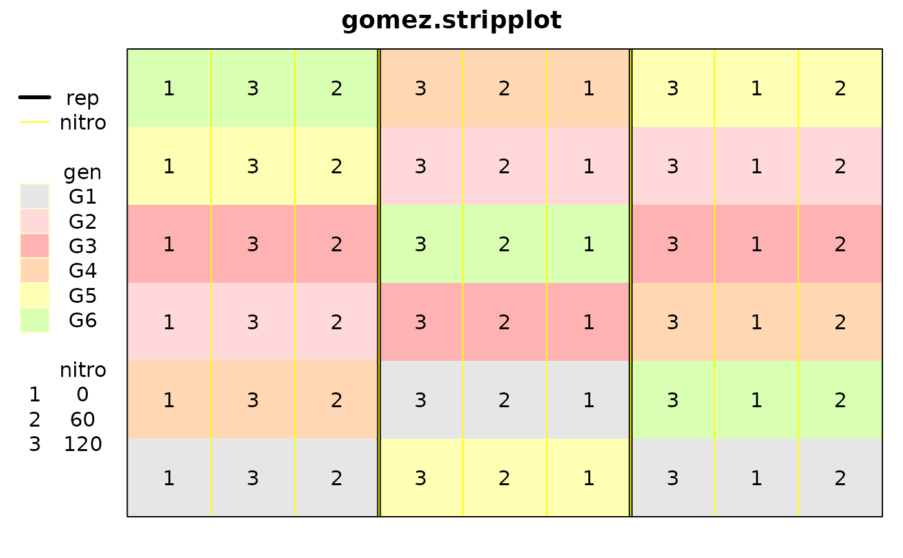

Strip-plot experiment of rice
gomez.stripplot.RdA strip-plot experiment with three reps, variety as the horizontal strip and nitrogen fertilizer as the vertical strip.
Format
yieldGrain yield in kg/ha
repRep
nitroNitrogen fertilizer in kg/ha
genRice variety
colcolumn
rowrow
Details
Note, this is a subset of the the 'gomez.stripsplitplot' data.
Used with permission of Kwanchai Gomez.
Source
Gomez, K.A. and Gomez, A.A.. 1984, Statistical Procedures for Agricultural Research. Wiley-Interscience. Page 110.
References
Jan Gertheiss (2014). ANOVA for Factors With Ordered Levels. J Agric Biological Environmental Stat, 19, 258-277.
Examples
library(agridat)
data(gomez.stripplot)
dat <- gomez.stripplot
# Gomez figure 3.7
libs(desplot)
desplot(dat, gen ~ col*row,
# aspect unknown
out1=rep, out2=nitro, num=nitro, cex=1,
main="gomez.stripplot")

# Gertheiss figure 1
# library(lattice)
# dotplot(factor(nitro) ~ yield|gen, data=dat)
# Gomez table 3.12
# tapply(dat$yield, dat$rep, sum)
# tapply(dat$yield, dat$gen, sum)
# tapply(dat$yield, dat$nitro, sum)
# Gomez table 3.15. Anova table for strip-plot
dat <- transform(dat, nf=factor(nitro))
m1 <- aov(yield ~ gen * nf + Error(rep + rep:gen + rep:nf), data=dat)
summary(m1)
#>
#> Error: rep
#> Df Sum Sq Mean Sq F value Pr(>F)
#> Residuals 2 9220962 4610481
#>
#> Error: rep:gen
#> Df Sum Sq Mean Sq F value Pr(>F)
#> gen 5 57100201 11420040 7.653 0.00337 **
#> Residuals 10 14922619 1492262
#> ---
#> Signif. codes: 0 ‘***’ 0.001 ‘**’ 0.01 ‘*’ 0.05 ‘.’ 0.1 ‘ ’ 1
#>
#> Error: rep:nf
#> Df Sum Sq Mean Sq F value Pr(>F)
#> nf 2 50676061 25338031 34.07 0.00307 **
#> Residuals 4 2974908 743727
#> ---
#> Signif. codes: 0 ‘***’ 0.001 ‘**’ 0.01 ‘*’ 0.05 ‘.’ 0.1 ‘ ’ 1
#>
#> Error: Within
#> Df Sum Sq Mean Sq F value Pr(>F)
#> gen:nf 10 23877979 2387798 5.801 0.000427 ***
#> Residuals 20 8232917 411646
#> ---
#> Signif. codes: 0 ‘***’ 0.001 ‘**’ 0.01 ‘*’ 0.05 ‘.’ 0.1 ‘ ’ 1
## Error: rep
## Df Sum Sq Mean Sq F value Pr(>F)
## Residuals 2 9220962 4610481
## Error: rep:gen
## Df Sum Sq Mean Sq F value Pr(>F)
## gen 5 57100201 11420040 7.653 0.00337 **
## Residuals 10 14922619 1492262
## ---
## Signif. codes: 0 '***' 0.001 '**' 0.01 '*' 0.05 '.' 0.1 ' ' 1
## Error: rep:nf
## Df Sum Sq Mean Sq F value Pr(>F)
## nf 2 50676061 25338031 34.07 0.00307 **
## Residuals 4 2974908 743727
## ---
## Signif. codes: 0 '***' 0.001 '**' 0.01 '*' 0.05 '.' 0.1 ' ' 1
## Error: Within
## Df Sum Sq Mean Sq F value Pr(>F)
## gen:nf 10 23877979 2387798 5.801 0.000427 ***
## Residuals 20 8232917 411646
# More compact view
## libs(agricolae)
## with(dat, strip.plot(rep, nf, gen, yield))
## Analysis of Variance Table
## Response: yield
## Df Sum Sq Mean Sq F value Pr(>F)
## rep 2 9220962 4610481 11.2001 0.0005453 ***
## nf 2 50676061 25338031 34.0690 0.0030746 **
## Ea 4 2974908 743727 1.8067 0.1671590
## gen 5 57100201 11420040 7.6528 0.0033722 **
## Eb 10 14922619 1492262 3.6251 0.0068604 **
## gen:nf 10 23877979 2387798 5.8006 0.0004271 ***
## Ec 20 8232917 411646
# Mixed-model version
## libs(lme4)
## m3 <- lmer(yield ~ gen * nf + (1|rep) + (1|rep:nf) + (1|rep:gen), data=dat)
## anova(m3)
## Analysis of Variance Table
## Df Sum Sq Mean Sq F value
## gen 5 15751300 3150260 7.6528
## nf 2 28048730 14024365 34.0690
## gen:nf 10 23877979 2387798 5.8006